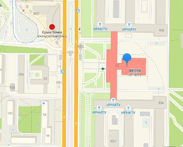

Здесь вы узнаете всё необходимое для поступления в наш институт.
Как подать документы на поступление?
Подать документы можно двумя способами: приехав по адресу ул. Лермонтова, 83. Центральная Приемная комиссия, А-105

Или онлайн в личном кабинете абитуриента на сайте ИРНИТУ
Какие баллы ЕГЭ необходимы для поступления на каждом из направлений?
| Информатика и вычислительная техника | Информационная безопасность | Информационные системы и технологии | |
|---|---|---|---|
| Математика | 39 | 39 | 39 |
| Русский язык | 43 | 43 | 43 |
| Информатика | 42 | 44 | 44 |
Всё о бюджетных и платных местах
- Направление "Информатика и вычислительная техника" имеет 80 бюджетных, из которых 8-целевых и 8 льготных, и 70 коммерческих мест.
- Направление "Информационная безопасность" имеет 43 бюджетных, из которых 4-целевых и 4 льготных, и 50 коммерческих мест.
- Направление "Информационные системы и технологии" имеет 80 бюджетных, из которых 8-целевых и 8 льготных, и 60 коммерческих мест.